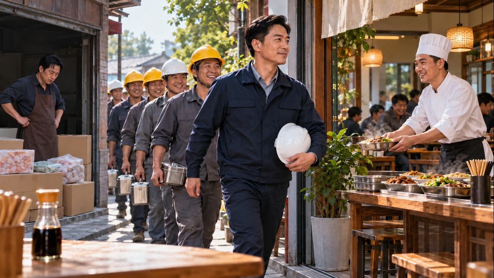

2026-10-26 · AP2代号枪神剧集代码：2609 KR313년 만에 돌아온 학생, 사라진 동안 세계 최강의 총잡이가 되었다!수업은 3년 결석, 시험은 전 과목 만점! 이 남자의 진짜 임무는?평범한 대학생인 줄 알았는데… 약혼녀를 구한 남자의 정체는 총신普通大学生归来实为枪神＋满分考试反差＋救未婚妻；人物明确成年。下载封面JPG
2026-10-27 · AQ2满级大师兄制霸都市剧集代码：2609 KR48시집가기 싫다는 언니 대신 동생이 선택한 남자, 알고 보니 만렙 사형!산에서 내려온 남자의 정체에 회장이 무릎을 꿇었다! 만렙 사형의 도시 접수혼인을 거절당한 사형, 신의 침술과 압도적 무공으로 판을 뒤집다高人下山＋姐姐拒婚妹妹代嫁＋身份令牌与神医武力双反转。下载封面JPG
2026-10-28 · AR2老年逆袭我竟成为山野之王剧集代码：2026 WW20아들에게 모든 걸 주고 버림받은 아버지, 산으로 돌아가 인생 역전에 성공했다허름한 노인이라 무시했는데… 특급 호텔이 먼저 찾는 산골 사장이 됐다!빈손으로 고향에 돌아온 아버지, 산에서 찾은 기회로 다시 일어선다老人被子女苛待返乡＋山货供货酒店＋晚年创业逆袭；不画孙辈。下载封面JPG
2026-10-29 · 续排表/韩语男频/2026-10-29从蚁王开始吞噬成神剧集代码：2609 KR57아내의 배신으로 추락한 재벌 후계자, 개미 왕으로 돌아와 복수한다!작은 개미로 깨어난 남자, 백만 개미 군단을 이끌고 회사를 되찾다죽은 줄 알았던 남편이 돌아왔다… 이번엔 개미 군단을 거느리고!妻子背叛＋灵魂寄蚂蚁进化＋百万蚁群夺回家业。下载封面JPG
2026-10-30 · 续排表/韩语男频/2026-10-30大爷俺踢球养活饥荒年全家剧集代码：2609 KR65기근에 시달리던 노포졸, 현대 축구장으로 넘어와 월드컵을 제패한다!무공으로 축구를 한다고? 한 끼를 구하러 온 노인이 세계를 놀라게 했다옛날 포졸의 발차기에 골문이 흔들렸다! 축구로 고향을 먹여 살리는 남자古代老捕快穿现代＋古武踢足球＋带物资回乡解饥荒。下载封面JPG
2026-10-31 · 续排表/韩语男频/2026-10-31空车超载还我三个亿的货剧集代码：2609 KR59빈 트럭이 과적이라고? 변호사 아들, 사라진 3억 위안 화물부터 내놓으라 했다!아버지에게 매긴 황당한 과적 벌금, 신입 변호사의 반격이 시작됐다20년간 당한 운전기사들, 빈 트럭 한 대로 부패한 요금소를 무너뜨리다空车超载荒诞冲突＋律师替父维权＋三亿玉石反向追责。下载封面JPG
2026-11-01 · 续排表/韩语男频/2026-11-01奈何桥上不许刹车剧集代码：2609 KR72저승 다리에서는 브레이크 금지! 영구차 운전사의 목숨 건 질주죽은 자를 운송하던 밤, 막힌 저승길을 뚫어야 살아 돌아간다!함정에 빠진 영구차 기사, 기이한 술법으로 저승의 다리를 돌파하다阴阳运输险途＋同行设局＋灵车冲过奈何桥；封面无尸体或血腥。下载封面JPG
2026-11-02 · 续排表/韩语男频/2026-11-02诡异擂台开局召唤左千户剧集代码：2026 WW30신들이 봉인된 결투장, 그가 소환한 것은 신이 아닌 인간 영웅이었다!세 번의 패배로 무너진 국운… 칼을 든 인간이 괴이한 신에게 맞선다아무도 부를 수 없던 신들 대신, 만계의 영웅들을 불러낸 남자国运绝境＋无法召神转召人族英雄＋以凡人战神。下载封面JPG
2026-11-03 · 续排表/韩语男频/2026-11-03请祖宗出面讨公道剧集代码：2609 KR62돌아가신 조상 5대가 빚을 졌다고? 본인을 데려오라던 은행 앞에 관을 가져왔다!10년 모은 돈을 빼앗긴 남자, 조상의 빚이라는 거짓말을 뒤집다죽은 조상의 보증인이라니… 온 마을을 속인 은행에 제대로 반격했다五代亡祖欠债荒诞设局＋银行要求本人到场＋抬棺维权揭信息盗用。下载封面JPG
2026-11-04 · 续排表/韩语男频/2026-11-04不当黄牛全族发愁剧集代码：2609 KR56가족에게 평생 부려 먹히던 아들, 더는 희생하지 않자 집안이 뒤집혔다!아내까지 빼앗으려는 가족에게 반격! 감정을 모으는 시스템으로 인생 역전효도만 강요하던 집안을 떠났다! 아내를 지키고 장원까지 오른 남자被家族当黄牛压榨＋觉醒情绪系统＋护妻并科举逆袭；不画性威胁。下载封面JPG
2026-11-05 · 续排表/韩语男频/2026-11-05九龙归位震八方剧集代码：2609 KR81가짜 결혼식에 권력자들이 줄줄이 인사하러 왔다! 신랑의 정체는 염라전주버린 약혼자가 신랑으로 돌아왔다… 그의 명패 하나에 연회장이 얼어붙었다정체를 감춘 남자와 계약 결혼, 알고 보니 모두가 두려워하는 절대자였다假婚约＋曾羞辱者震惊＋权贵朝贺曝光阎罗殿主。下载封面JPG
2026-11-06 · 续排表/韩语男频/2026-11-06自立门户干火锅，表哥急疯了剧集代码：2609 KR58쫓아낸 요리사가 맞은편에 훠궈집을 열자, 사촌의 가게가 텅 비었다!쫓겨난 요리사가 가져간 것은 비법 하나… 손님들이 모두 길 건너로 향했다함께 키운 가게에서 버림받은 남자, 진짜 훠궈의 맛으로 복수한다合伙人背叛＋带走祖传底料对街开店＋客流反转。下载封面JPG
2026-11-07 · 续排表/韩语男频/2026-11-07不过一瓶醋剧集代码：2609 KR69싸구려 식재료로 속이던 사촌, 거래를 끊은 현장소장이 사실은 그룹 회장이었다!큰 단체 주문을 기대했는데… 손님들은 그의 식당을 지나 옆집으로 갔다도와준 은혜를 탐욕으로 갚은 친척, 진짜 회장이 거래처를 바꾸자 끝났다亲戚克扣食材＋隐藏董事长及时止损＋工人大单越店反转。下载封面JPG
2026-11-08 · 续排表/韩语男频/2026-11-08归来后我踩碎所有偏见剧集代码：2026 WW32대신 감옥까지 갔는데 재능도 빼앗겼다! 출소한 진짜 아들의 반격가족이 편든 가짜 천재, 진짜 주인이 부른 노래 한 곡에 무너졌다!3년 만에 돌아온 남자, 도둑맞은 노래와 인생을 되찾고 가족을 끊어냈다替养子顶罪三年＋作品被窃＋原创歌实力反击断亲。下载封面JPG
2026-11-09 · 续排表/韩语男频/2026-11-09我宗门真的全是老弱病残啊剧集代码：2609 KR87노약자뿐이라던 문파, 물 긷고 장작 패던 제자가 이미 절대고수였다!잡영근이라 무시했는데… 스승들이 시킨 집안일이 최강의 수련이었다숨은 고수들이 키운 제자가 하산했다! 모두가 비웃던 청년의 진짜 실력老弱病残宗门反差＋日常重劳作即绝世修炼＋下山碾压。下载封面JPG
2026-11-10 · 续排表/韩语男频/2026-11-10只想种地扶贫奈何万民归顺剧集代码：2609 KR66백성을 먹여 살리려 했을 뿐인데… 버려진 황태자에게 천하가 모여들었다!가뭄의 땅에 농장 시스템이 열렸다! 굶주린 백성들이 선택한 새 황제왕위를 노린 적 없는데? 농사짓던 폐태자가 민심으로 제국을 뒤집다废太子流放旱地＋农场系统供粮＋以温饱收服民心。下载封面JPG
2026-11-11 · 续排表/韩语男频/2026-11-11旁人笑我木讷不知我有老仙金手指剧集代码：2609 KR82둔하다고 허드렛일만 시켰는데… 옥패 속 고수를 깨우자 천재가 되었다!모두가 비웃던 잡역 제자, 단 한 자루의 검으로 산봉우리를 갈랐다열 번 숨 쉬는 사이 수련의 문을 열었다! 고대 스승을 만난 청년의 역전被贬杂役＋玉佩中上古师父指导＋宗门大比惊人天赋。下载封面JPG
2026-11-12 · 续排表/韩语男频/2026-11-12市井枭雄剧集代码：2609 KR60가게를 키워 놓자 임대료를 폭등시킨 건물주, 맞은편으로 옮기니 손님도 따라왔다!10년 키운 슈퍼를 빼앗으려던 건물주, 결국 그 상가를 통째로 잃었다텅 빈 매장을 보고도 몰랐다… 쫓아낸 세입자가 상가의 새 주인이 될 줄은!房东贪婪暴涨租金＋商户连夜搬空对街逆袭＋最终买下原商场。下载封面JPG
2026-11-13 · 续排表/韩语男频/2026-11-13逆天纸扎铺剧集代码：2609 KR75귀신에게 쓴 돈이 100배로 돌아온다! 종이 공예점 주인의 기막힌 돈벌이파혼당한 가게 주인, 어머니를 살리려다 저승의 큰손이 되었다!귀신들의 소원을 들어줬을 뿐인데… 저승 전체가 그의 뒷배가 됐다纸扎铺小老板＋给诡花钱百倍返还＋救母并获阴司撑腰。下载封面JPG
2026-11-14 · 续排表/韩语男频/2026-11-14穿越女频开局送皇后白月光进东厂剧集代码：2609 KR85황후에게 휘둘리던 황제, 현대인이 깨어나자 더는 무릎 꿇지 않았다!황후가 감싸던 남자를 끌어내렸다! 꼭두각시 황제의 통쾌한 반격눈밭에 무릎 꿇던 황제가 바뀌었다… 권신과 황후를 뒤집은 남자穿成窝囊皇帝＋拒绝继续被操纵＋废后反击权臣；无暴力刑罚画面。下载封面JPG
2026-11-15 · 续排表/韩语男频/2026-11-15山海计划我把整个修仙界上交了剧集代码：2609 KR27옷장 너머가 수선계였다! 비밀을 현대에 가져오자 과학과 선술이 맞붙었다이세계에서 광산 노예가 될 뻔한 남자, 외골격 전투복을 입고 돌아왔다!수선계를 혼자 독차지하지 않았다! 두 세계를 연결한 남자의 산해 프로젝트衣柜通修仙界＋现代科技外骨骼反攻＋两界合作共荣。下载封面JPG